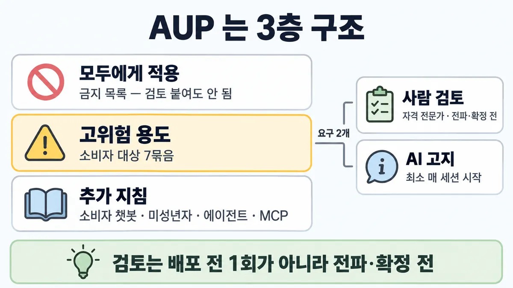
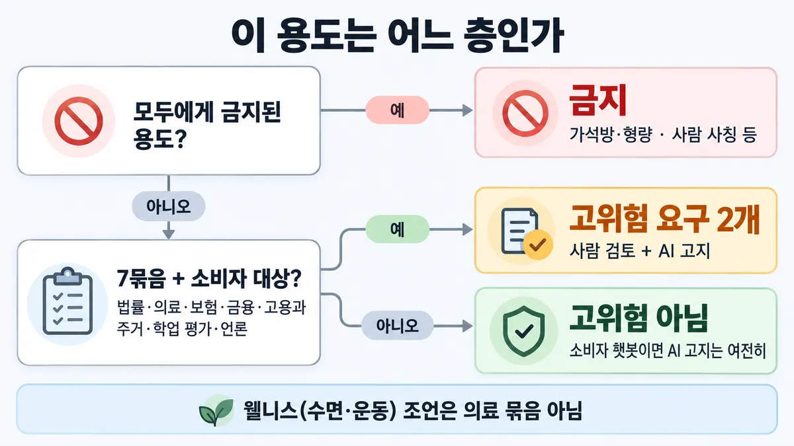
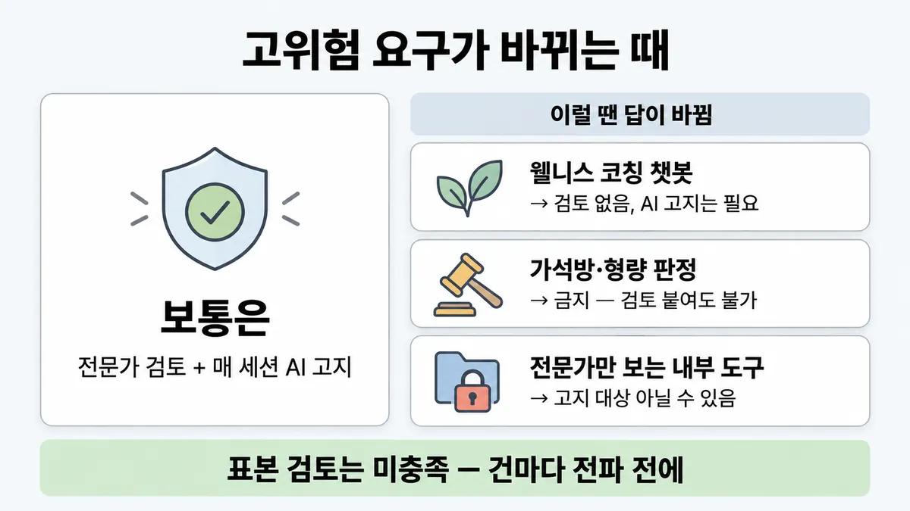

■ AUP 고위험 용도
표시가 없는 문장은 공식 문서에서 확인한 내용이에요. 다른 표시는 읽는 법
왜 배우나 — 시험이 요구하는 것
시험 목표 5.3 사람 검증 전략 · D5 규정·안전 14%Apply human-in-the-loop validation strategies
이 개념으로 푸는 판단 (할 수 있어야 하는 것)
- 5.3② AI 가 대출 추천을 내고 / 뉴스 기사를 자동 생성해 게시한다 — 사람 검토는 언제? — AUP 고위험 용도 요구 적용 (전문가 검토 시점·고지·범위)
- 5.5① 고객지원 챗봇 — 사람처럼 보이게 해도 되나? — AI 고지·사람 사칭 금지 (투명성의 최소선)
- 5.5② 대출·채용 보조 모델이 집단마다 다르게 판정하는지 어떻게 재나? — 편향·공정성 측정 방법과 없애야 할 결정 경로
한눈에
AUP(Usage Policy) 는 3층 — 모두에게 적용(Universal Usage Standards = 금지 목록) · 고위험 용도(High-Risk Use Case Requirements = 소비자 대상 특정 용도에 추가 안전장치) · 추가 지침(소비자 챗봇·미성년자 서비스·에이전트·MCP 서버) (2026-09-28 조회)
고위험 용도의 요구 2개 = 사람 검토(AUP 이름 Human-in-the-loop — 그 분야 자격 전문가가 내용·결정을 전달·확정 전에) + AI 고지(disclosure, 최소 매 세션 시작) (2026-09-28 조회)
비유 4-eyes 원칙. 도입 때 한 번 감사하고 끝이 아니라 출고마다 서명. 고지는 자동 발송 메일의 "자동 발송" 표기


ELI5
약국에서 기계가 약을 싸 줘도, 약사가 봉투마다 보고 건네주는 거예요.
- 몸·돈·집·일자리처럼 중요한 일은 그 분야 전문가가 먼저 봐요.
- 가게를 열 때 한 번이 아니라, 봉투가 나갈 때마다 봐요.
- 손님한테 "기계가 도왔어요" 라고 알려 줘요.
- 아예 팔면 안 되는 약도 따로 있어요. 약사가 봐도 못 팔아요.
개념 설명
원리
왜 따로 두나
- 공공 복지·사회적 형평에 중요한 분야라 개인이 다칠 위험이 큼 → 관련 분야 전문가를 과정에 넣고, 최종 사용자가 AI 가 끼었는지 알게 함 (aup).
세 층 가르기
- 금지(Universal Usage Standards) : 모든 사용자·용도. 검토를 붙여도 못 씀. 예 가석방·형량 결정, 사람 사칭(impersonation).
- 고위험(High-Risk Use Case Requirements) : 7개 분야 + 소비자 대상. 쓸 수 있지만 요구 2개(전문가 검토 · AI 고지(disclosure))가 붙음.
- 추가 지침(Additional Use Case Guidelines) : 고위험이든 아니든. 소비자 챗봇 AI 고지 · 미성년자 서비스 · 에이전트 · MCP 서버.
요구 2개의 조건
- 사람 검토 : "개인·소비자에게 직접 영향을 주는" 조언·추천·주관적 결정일 때. 검토자 = 그 분야 자격 전문가. 시점 = 그 내용·결정이 전달·확정되기 전.
- AI 고지 : 출력이 개인·소비자에게 "바로" 보일 때. 최소 매 세션 시작.
- 책임 : 정보의 정확성·적절성은 운영자(고객) 쪽.
핵심 질문 세 개
- 모두에게 금지된 용도인가? (그러면 설계에서 그 경로를 없앰)
- 7개 분야 중 하나이고 소비자에게 직접 영향을 주나?
- 출력이 사람을 거치나, 소비자에게 바로 가나?
규칙과 판단


갈림길
①④⑤ 용도 가르기 [5.3②] [5.5①②]
금지
전문가 검토를 붙여도 안 됨
고위험 요구 2개
사람 검토 + AI 고지
AI 고지
모든 소비자 대상 챗봇은 AI 라고 알림, 최소 매 채팅 세션 시작
금지 목록만 적용
Universal Usage Standards 는 모든 사용자·용도에 적용
② 어느 묶음인가 [5.3②]
의료 아님
웰니스 조언은 의료 묶음에서 빠짐
언론 묶음
자동 생성해 외부 공개용으로 게시
고용과 주거
주거 자격(임대·주택 대출) 판정
금융
투자 조언·대출 승인·신용도 판정
③ 언제 검토 [5.3②]
맞음
그 분야 자격 전문가가 내용·결정을 전달·확정 전에
틀림
시스템 배포 전 1회 검토는 내용·결정을 전달 전에 본 것이 아님 (문구 해석)
틀림
요구는 그 분야 자격 전문가가 내용·결정을 전달·확정 전에 검토
흐름
그림 속 이름·금액·시간·토큰 수는 예시예요. 공식 한도·동작은 카드 본문 값이 기준.
장면 글로 보기
칸 : 모델 → 전문가 → 고객
규칙 (전문가) : 그 분야 자격 전문가가 전달·확정 전에 검토
질문 : 전문가는 언제 봐야 할까?
① 전달 전 전문가 검토 ✓
- 시작 : 모델 — 쪽지 : 신청 #2231 / 연소득 4,800만 / 대출 한도 문의
- 초안 : 모델 → 전문가 : 소비자에게 직접 영향 — 쪽지 : 추천 초안 / 한도 3,000만 · 승인
- 검토 : 전문가 : 전달·확정 전에 검토 — 쪽지 : 심사역 확인 / 한도 3,000만 → 2,500만 / 14:02 서명
- 전달 : 전문가 → 고객 : 최소 매 세션 시작 고지 — 말 : “이 추천은 AI 를 써서 만들었고 심사역이 확인했어요. 한도 2,500만 원.”
- 끝 : 전문가가 이 추천을 전달 전에 봄 + AI 고지
② 배포 전 한 번만 검토 ≠
- 시작 : 모델 — 쪽지 : 신청 #2231 / 연소득 4,800만 / 대출 한도 문의
- 건너뜀 : 전문가
- 전달 : 모델 → 고객 : 배포 뒤 출력은 검토 없이 — 말 : “한도 3,000만 원 승인 추천이에요.”
- 끝 : 시스템 배포 전 1회 검토는 이 추천을 전달 전에 본 것이 아님
규칙 원문 ①②③④⑤ (갈림길로 그린 규칙)
-
3층 구조 : 금지(모두) · 고위험(소비자 대상 특정 용도) · 추가 지침(소비자 챗봇·미성년자·에이전트·MCP). 위반하면 throttle(속도 제한)·정지·해지, 입력이 위반이면 출력을 막거나 바꿀 수 있음 (2026-09-28 조회) [5.3②]
-
고위험 7개 분야 (2026-09-28 조회) [5.3②]
묶음 원문 범위 법률 법 해석 · 법률 안내 · 법적 함의가 있는 결정 의료 의료 결정 · 진단 · 환자 돌봄 · 치료 · 정신 건강. 웰니스(수면·스트레스·영양·운동)는 제외 보험 건강·생명·재산·장애 보험의 인수 · 청구 처리 · 보장 결정 금융 투자 조언 · 대출 승인 · 금융 자격 · 신용도 판정 고용과 주거 고용 가능성 · 이력서 선별 · 채용 도구 · 주거 자격(임대·주택 대출) 학업 평가·인증·입학 입학(평가·채점·순위) · 어학 · 전문 자격 시험 · 교육기관 인증 언론·전문 저널리즘 콘텐츠를 자동 생성해 외부 공개용으로 게시 -
요구 2개 (2026-09-28 조회) [5.3②]
사람 검토 : 개인·소비자에게 직접 영향을 주는 조언·추천·주관적 결정 → 그 분야 자격 전문가가 내용·결정을 전달(dissemination)·확정(finalization) 전에 검토. 정확성·적절성 책임은 운영자 쪽
AI 고지 : 출력이 개인·소비자에게 바로 보이면, AI 로 조언·결정·추천을 만든다고 알림. 최소 매 세션 시작
-
고위험과 헷갈리는 금지 : 가석방·형량 결정 · 생체 정보로 인종·정치 성향 등 추론 · 동의 없는 얼굴 인식·위치 추적 · 결과를 사람이 만든 것처럼 내놓는 사람 사칭 = 모두에게 금지 → 전문가 검토를 붙여도 안 됨 (2026-09-28 조회) [5.5②]
-
고위험이 아니어도 : 모든 소비자 대상 챗봇(외부 대상·대화형 AI 에이전트 포함)은 사람이 아니라 AI 라고 알림, 최소 매 채팅 세션 시작 (2026-09-28 조회) [5.5①]
더 깊이 : 판단 규칙 · 상황 변수 (설명)
판단 규칙
| 조건 | 답 | 근거 |
|---|---|---|
| 7개 분야 용도 + 개인·소비자에 직접 영향 주는 조언·추천·주관적 결정 | 그 분야 자격 전문가가 전달·확정 전에 검토 | aup "a qualified professional in that field must review the content or decision prior to dissemination or finalization" |
| 고위험 용도 + 출력이 개인·소비자에게 바로 보임 | AI 사용 고지, 최소 매 세션 시작 | aup |
| 뉴스·기사를 자동 생성해 외부 게시 | 고위험(언론 묶음) | aup |
| 수면·스트레스·영양·운동 조언 | 의료 묶음 아님 | aup |
| 가석방·형량 결정 · 생체 정보로 인종·정치 성향 추론 · 동의 없는 얼굴 인식 | 금지 — 검토로 못 살림 | aup |
| 결과를 사람이 만든 것처럼 내놓음 | 금지(사람 사칭) | aup |
| 모든 소비자 대상 챗봇(고위험 아니어도) | AI 라고 알림, 최소 매 채팅 세션 시작 | aup |
상황 변수
| 변수 | 값 | 답 쪽 | 등급 | 근거 |
|---|---|---|---|---|
| 분야 | 7개 분야 안 | 고위험 요구 | aup | |
| 분야 | 웰니스 | 고위험 아님 (챗봇이면 고지는 추가 지침으로) | aup | |
| 대상 | 소비자 대상 | 고위험 요구 적용 | aup | |
| 대상 | 사내 직원만 쓰는 도구 | 적용 범위 흐림 | 미해결 | 미해결 2 |
| 출력 경로 | 소비자에게 바로 | 고지 필요 | aup | |
| 출력 경로 | 전문가가 검토·편집 후 전달 | 고지 필요 여부 흐림 | 미해결 | 미해결 3 |
| 검토 시점 | 건마다 전달·확정 전 | 맞음 | aup | |
| 검토 시점 | 시스템 도입 때 1회 | 틀림 | (문구 해석) | 원문 대상이 "the content or decision" |
| 언론 | 외부 소비용 게시 | 고위험 | aup | |
| 언론 | 사내 게시판용 요약 | 언론 묶음 조건("for external consumption") 밖 | (문구) | aup |
연습 문제
은행이 고객 앱에 바로 뜨는 대출 승인 추천금융·소비자을 Claude 로 만든다. 가석방 판정·사람 사칭(impersonation) 같은 금지 용도는 아니다. 개발팀은 "시스템 배포 전에 심사역이 한 번 검토하면 된다" 고 한다. 무엇이 필요할까?
시험 대비
함정
- "시스템 배포 전에 전문가가 한 번 검토" → 원문은 그 내용·결정을 전달·확정 전에 검토. 시스템 배포 전 1회 검토는 내용·결정을 전달 전에 본 것이 아님 (문구 해석 — 원문 대상은 "the content or decision")
- "언론은 고위험 목록에 없음" → 있음 (자동 생성해 외부 게시)
- "프롬프트에 '신중히 답하라'" 로 검토를 대신 → 요구는 자격 전문가 검토
- "고지는 약관에 한 번" · "첫 대화에서 한 번만" → 최소 매 세션 시작
- "전문가 검토를 붙이면 가석방·형량 판정도 됨" → 모두에게 금지된 용도
- "개인에 영향 주는 결정은 전부 고위험" → 공식은 7개 분야·소비자 대상 한정 (목록 5.3② 도 영상이 넓혀 말한 범위를 같은 식으로 좁혀 고쳤음)
- "수면 코칭 앱도 의료라 전문가 검토 필수" → 웰니스는 의료에서 빠짐. 단 소비자 챗봇이면 AI 고지는 여전히
신호
"Our High-Risk Use Case Requirements apply to specific consumer-facing use cases that pose an elevated risk of harm."
"a qualified professional in that field must review the content or decision prior to dissemination or finalization."
"This disclosure must be provided at a minimum at the beginning of each session."
"Media or professional journalistic content: Use cases related to using our products or services to automatically generate content and publish it for external consumption"
"Wellness advice (e.g., advice on sleep, stress, nutrition, exercise, etc.) does not fall under this category"
"All consumer-facing chatbots, including any external-facing or interactive AI agent, must disclose to users that they are interacting with AI rather than a human."


더 깊이 : 뒤집히는 때 · 오답 재료 (설명)
뒤집히는 때
1. 대출이라도 고위험 요구가 약해지는 때
- 조건 : 은행 심사역만 보는 신청서 요약 도구. 결정은 심사역이 직접 내리고, 고객은 모델 출력을 못 봄.
- 판단 : AI 고지 요구는 "출력이 개인·소비자에게 바로 보일 때" 조건이라 여기선 적용 안 될 수 있음. 사람 검토 요구는 "개인에게 직접 영향 주는 결정" 인데, 결정을 심사역(자격 전문가)이 하니 구조상 이미 충족에 가까움.
- 등급 : 미해결 — 요구의 적용 대상 "consumer-facing use cases" 에 사내 도구가 드는지 원문이 말하지 않음.
- 근거 : aup
2. 의료 앱인데 고위험이 아닌 때
- 조건 : 수면 습관·스트레칭을 코칭하는 소비자 챗봇.
- 판단 : 웰니스 조언은 의료 묶음에서 빠짐 → 전문가 검토 요구 없음. 단 소비자 대상 챗봇이라 AI 고지는 추가 지침으로 여전히 필요.
- 근거 : aup
3. 검토를 붙여도 못 쓰는 때
- 조건 : 교정 기관이 가석방 적격을 판정하는 보조 도구, "판사가 최종 확인" 을 붙임.
- 판단 : 가석방·형량 결정은 고위험이 아니라 금지 목록. 사람 검토를 붙인다고 허용되지 않음 → 그 결정 경로를 설계에서 없앰.
- 근거 : aup
4. 하루 1,200건 대출 추천 — 검토를 표본으로 줄여도 되나
- 조건 : 소비자에게 가는 대출 추천이 하루 1,200건, 비용 때문에 5% 표본(60건)만 검토하자는 안.
- 판단 : 요구는 "그 내용·결정" 을 전달·확정 전에 검토. 나머지 1,140건은 검토 없이 전달됨 → 요구 미충족. 비용을 줄이려면 검토 건수가 아니라 전문가 1건당 시간을 줄이는 쪽(요약·근거 표시)을 찾음.
- 등급 : 요구 판정은 확인(문구) · 처방은 업계 일반
- 근거 : aup
오답 재료
| 오답 | 왜 끌리나 | 왜 틀리나 | 등급 | 근거 |
|---|---|---|---|---|
| "시스템 배포 전에 전문가가 한 번 검토" | 도입 심사처럼 보임 | 요구는 그 내용·결정을 전달·확정 전에 | (문구 해석) | aup |
| "언론은 고위험 목록에 없으니 검토·고지 생략" | 법률·의료·금융만 떠오름 | 언론 묶음이 있음 | aup | |
| "프롬프트에 '신중히 답하라'" | 싸고 빠름 | 요구는 자격 전문가 검토 | aup | |
| "고지는 약관에 한 번" | 법무팀 관행 | 최소 매 세션 시작 | aup | |
| "사용자가 물을 때만 AI 라고 밝힘" | 전환율 | 먼저 알림, 최소 매 세션 시작 | aup | |
| "전문가 검토를 붙이면 가석방 판정도 가능" | 고위험 처방을 그대로 적용 | 금지 용도 | aup | |
| "개인에게 영향 주는 결정은 전부 고위험" | 안전해 보임 | 7개 분야·소비자 대상 한정 | aup | |
| "수면 코칭도 의료라 전문가 검토 필수" | 건강 = 의료 | 웰니스는 제외 | aup | |
| "검토는 표본 5% 로 충분" | 품질 관리 관행 | 나머지 출력은 검토 없이 전달 | (문구) | 뒤집히는 때 4 |
참고
미해결
- AUP 시행일·개정일이 받은 원문(en-aup.md)에 없음 → 목록(2026-09-27 조회)과 같은 판인지 날짜로는 확인 못 함. 내용은 목록 5.3② 의 7개 분야·요구 2개·웰니스 제외와 일치.
- "consumer-facing use cases"(aup) 와 "directly affecting individuals or consumers" 의 경계 : 사내 직원용 도구가 드는지 원문이 말하지 않음.
- 전문가가 검토·편집한 뒤 자기 이름으로 내보내는 출력은 "presented directly"인지, 그리고 고지 없이 내보내면 "presenting results as human-generated"(59줄 사칭 금지)에 해당하는지 원문 문장 없음.
- 대출은 금융 묶음("loan approvals")과 고용과 주거 묶음("home loans") 두 곳에 나옴 — 주택 대출은 둘 다 해당. 요구는 같으니 답은 안 바뀜.
- 목록의 "(건마다)" 는 원문 단어가 아님. 원문은 "the content or decision" — 카드엔 '내용·결정을 전달·확정 전에' 로만 적음.